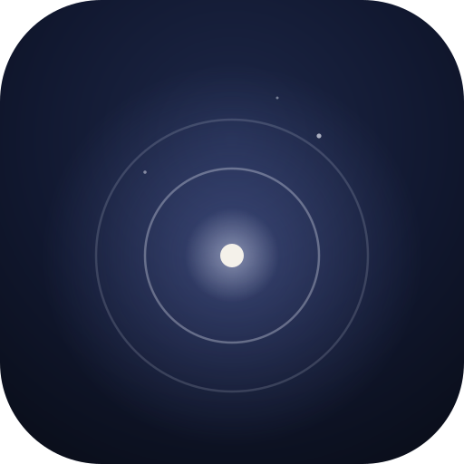

Gathering today’s word, quote and joke…
Touch or swipe to begin the sound
Pull the words down for a new set
Tap the word to hear it
You can add faith verses in Settings
Pull down for another verse
The eye button changes the colours. Here you choose the tones it moves through.
A new word, quote and joke arrive each day when you open the app, with music composed on your phone to go with them. Pull the words down for another set, and use the arrows to look back. Every set stays on this phone.
Built by Big Bear Binary
Release 15
